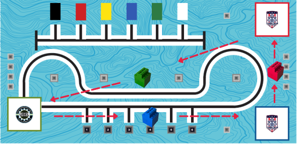
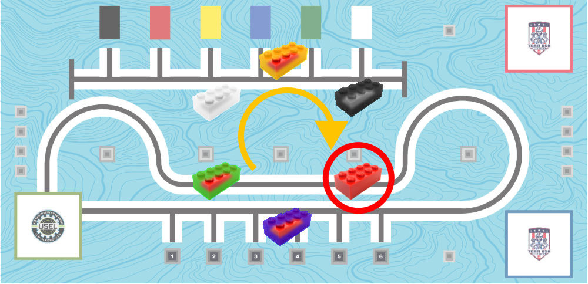

Carry the blocks to their designated positions.

Measure how much the robot needs to move to reach the blocks and to make it into each of the squares.
Surrounded by crates, use your compass to turn, scan them to identify crate colors, and collect the one that matches your orders

Measure the distances for each step the robot needs to carry out.